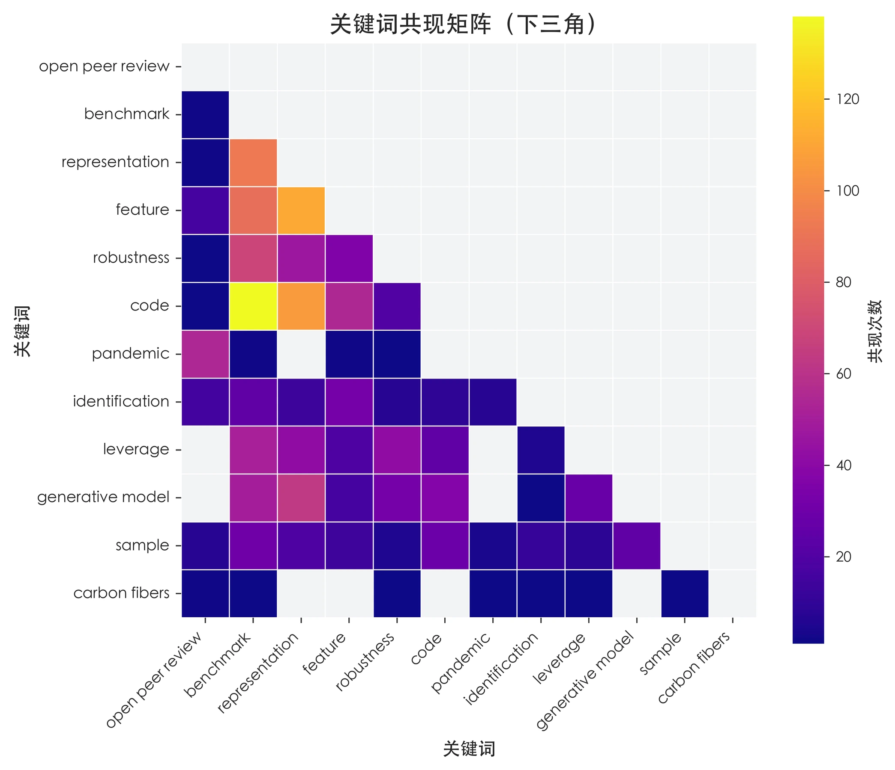

SUBSET 01 · ARTIFICIAL INTELLIGENCE
人工智能子数据集
本页只呈现人工智能子数据集的完整分析。内容不再按“论文与知识网络、作者机构与团队、同行评议过程”拆分跳转，而是依照报告从数据来源、特征工程、描述性分析、相关性分析到模型结果连续组织。
CHAPTER 01
引言
说明人工智能开放评审场景、研究问题及分领域分析价值。
CHAPTER 02
数据采集与构建
以 OpenReview 等会议开放评审数据为重要来源，介绍会议论文、评审记录、接收结果与 OpenAlex 元数据的匹配过程。
数据边界突出会议论文与开放评审互动
目标变量高被引与高颠覆性标签
CHAPTER 03
特征工程
按报告结构构建论文本身、作者机构、同行评议过程三类特征。
论文特征会议来源、参考文献、关键词、标题摘要与创新性
作者团队声誉、职业年龄、团队规模与合作结构
评议过程轮次、意见与回复长度、情感和关注焦点
CHAPTER 04
描述性分析
依次呈现人工智能子集的样本结构、结果变量、评审过程和团队声誉分布。


CHAPTER 05
变量相关性分析
分别比较知识网络、作者机构团队和评审过程变量与高被引、高颠覆性标签的关系。


CHAPTER 06
模型构建与结果
报告人工智能子集上的高被引和高颠覆性预测效果，并比较加入同行评议特征前后的变化。
CHAPTER 07
总结与讨论
总结人工智能领域的特异性发现、解释边界与跨领域比较意义。
CHAPTER 08
项目成果与开放资源
汇总人工智能子集的数据、图表、模型结果与可复用资源。